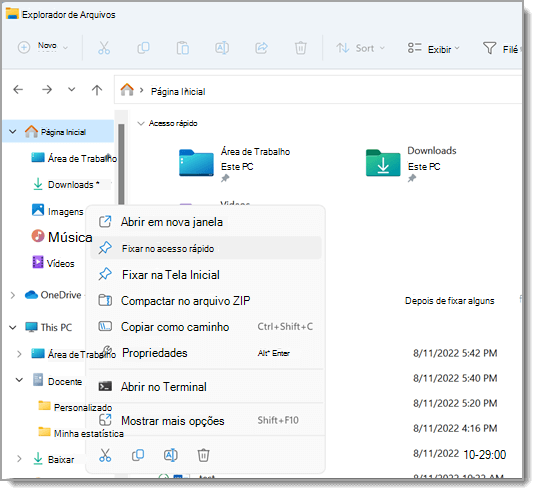
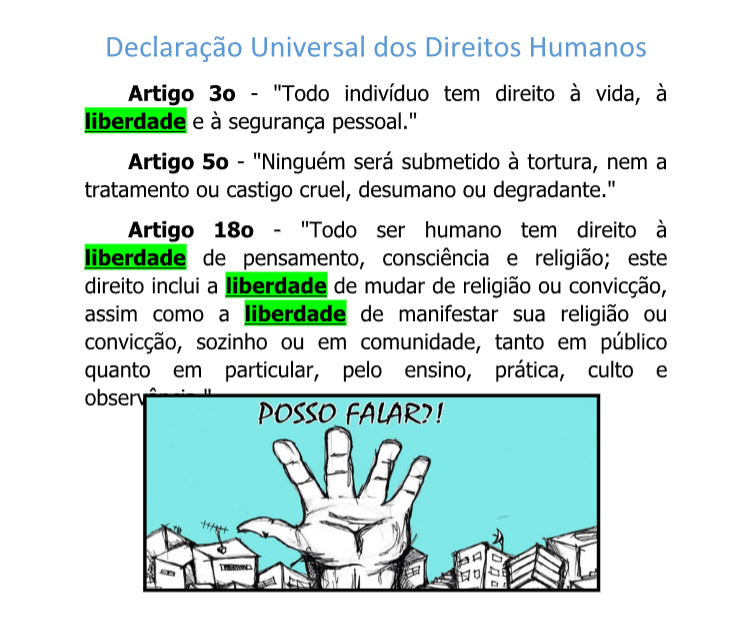
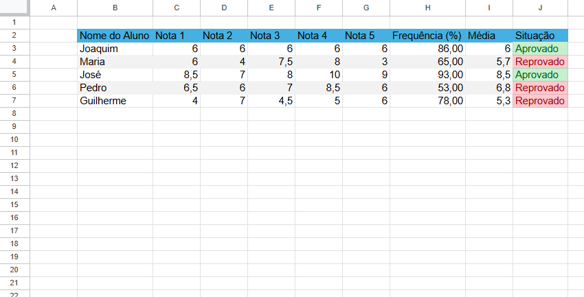
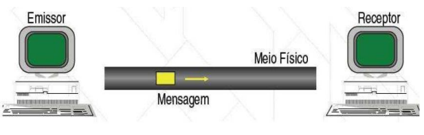
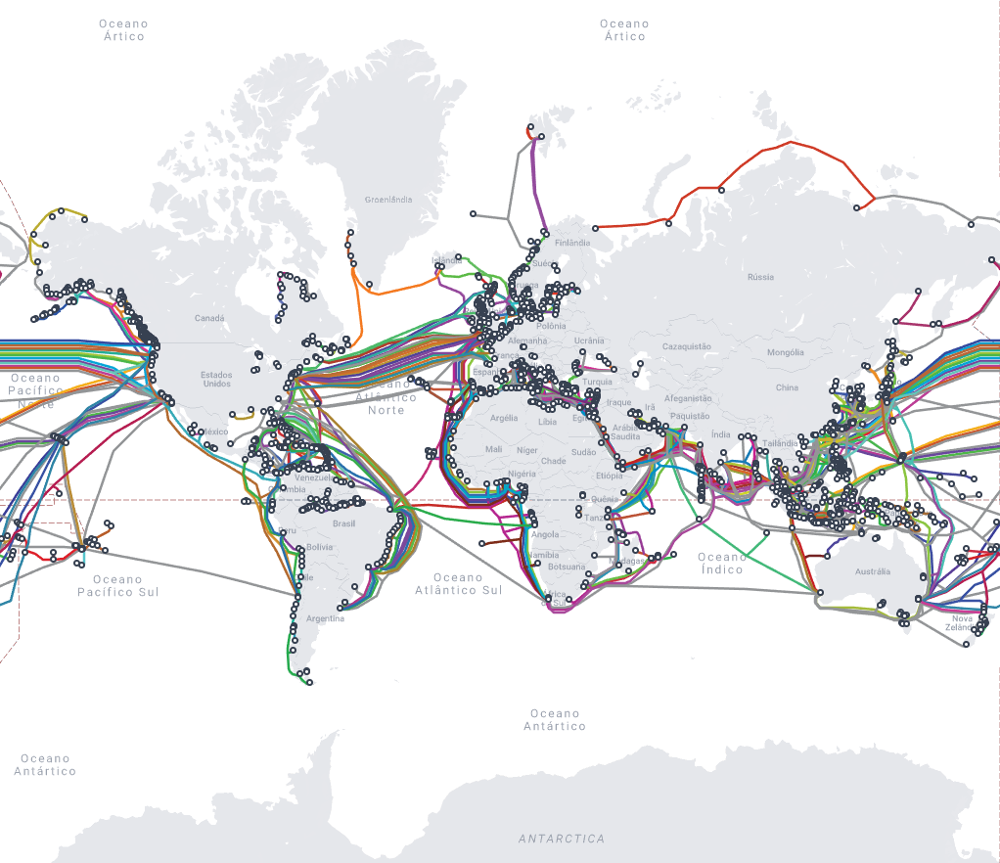

Componentes eletrônicos, componentes de rede, servidores e dispositivos que utilizamos

Os fundamentos de TI (Tecnologia da Informação) abrangem o estudo de hardware e software, redes e segurança da informação, que são essenciais para processar, gerenciar e trocar informações. Em um nível prático, isso inclui o conhecimento de como os computadores funcionam, os diferentes componentes de sistemas (hardware e software), como redes de computadores se comunicam (incluindo sem fio) e, de forma crucial, como proteger esses dados e sistemas.

Hardware de computador é a parte física de um sistema eletrónico, ou seja, todos os componentes físicos que você pode tocar. Inclui peças internas, como a placa-mãe, o processador (CPU) e a memória RAM, e componentes externos (periféricos), como o monitor, o teclado e a impressora. Sem o hardware, um computador não conseguiria executar os programas (software) que o tornam útil.

A placa-mãe (ou motherboard) é a principal placa de circuito em um computador, servindo como a "espinha dorsal" que conecta e permite a comunicação entre todos os componentes internos e externos, como o processador (CPU), memória RAM, disco rígido (HD), placa gráfica (GPU) e dispositivos periféricos. Ela distribui energia para os componentes e define as capacidades de expansão e conectividade do PC, sendo essencial para o funcionamento de toda a máquina.
Um processador CPU (Unidade Central de Processamento) é o "cérebro" do computador, responsável por executar todas as instruções e realizar o processamento de dados necessário para que o sistema funcione. Ele busca instruções na memória, executa cálculos e controla as funções operacionais, atuando como um intermediário vital entre outros componentes, como a memória e o armazenamento, para que o sistema possa executar tarefas e aplicações.

Memória RAM (Random Access Memory) é a memória volátil do computador, que serve como um espaço de trabalho temporário para o processador. Ela armazena dados e instruções de aplicativos em uso, permitindo acesso rápido e direto a eles enquanto o computador está ligado. Quanto mais RAM um computador possui, mais tarefas e programas ele pode executar simultaneamente sem ficar lento.

Um sistema operacional (SO) é um software fundamental que gerencia todo o hardware e software de um dispositivo, como computadores e smartphones, atuando como uma ponte de comunicação entre o usuário, os aplicativos e a máquina. Ele fornece uma plataforma comum para que outros programas funcionem, gerencia recursos como memória e dispositivos de entrada/saída, e oferece a interface para que o usuário interaja com o aparelho e execute tarefas. Exemplos são: Windows, macOS, Linux, Android.
Um sistema de arquivos é a estrutura que organiza e gerencia dados em dispositivos de armazenamento, como HDs e SSDs, definindo como os arquivos são armazenados e acessados. No modo texto (Prompt de Comando/CMD), o sistema de arquivos é manipulado através de comandos por texto, enquanto no modo gráfico (Explorador de Arquivos), utiliza uma interface visual intuitiva com ícones e menus.
Software de escritório, ou software de produtividade, é um conjunto de programas que auxilia na produção de documentos como textos, planilhas e apresentações, facilitando tarefas em ambientes profissionais e pessoais. Exemplos incluem o pacote Microsoft Office (com Word, Excel e PowerPoint) e alternativas gratuitas como o LibreOffice e o Google Workspace (com Docs, Sheets e Slides).
O Microsoft Word é um programa de processamento de texto para criar e editar documentos profissionais, como relatórios e cartas. Ele permite formatar textos, inserir elementos gráficos (como imagens e tabelas), adicionar cabeçalhos e rodapés, e verificar ortografia e gramática. Além disso, oferece funcionalidades como a possibilidade de trabalhar com outros usuários simultaneamente (coautoria), salvar em diferentes formatos e armazenar arquivos na nuvem.
O PowerPoint é um programa da Microsoft para criar apresentações de slides, que serve para organizar e exibir informações de forma visual. Ele permite a inserção de textos, imagens, gráficos, áudios e vídeos, utilizando modelos pré-definidos ou criando designs personalizados. É amplamente usado em apresentações corporativas, educacionais e acadêmicas para reuniões, palestras, aulas e seminários.
O Microsoft Excel é um software de planilha eletrônica usado para organizar, calcular e analisar dados através de tabelas. Ele permite automatizar tarefas, fazer cálculos matemáticos e criar gráficos para visualização de informações de forma eficiente. Sua principal função é manipular dados em grades de células, sendo uma ferramenta essencial para diversas áreas profissionais como finanças, marketing e logística.

Os fundamentos da eletroeletrônica abrangem os princípios de eletricidade e magnetismo, como o movimento de cargas elétricas (corrente elétrica), a influência de campos elétricos e magnéticos, e as leis que governam o comportamento de circuitos elétricos (como as leis de Ohm e Kirchhoff). A área também lida com a geração, distribuição e aplicação de energia, e o uso de componentes eletrônicos básicos para criar e controlar circuitos.

Resistor: Um resistor é um dispositivo que tem como objetivo oferecer uma oposição à passagem de corrente elétrica, através de seu material. A essa oposição damos o nome de resistência elétrica ou impedância, que possui como unidade o ohm.
Diodo Emissor de Luz (LED): O diodo emissor de luz, quando energizado, emite luz visível. O processo de emissão de luz pela aplicação de uma fonte elétrica de energia é chamado eletroluminescência.
Transistor: Um transístor (ou transistor) é um componente eletrônico semicondutor fundamental que funciona como um amplificador ou uma chave eletrônica. Ele controla o fluxo de corrente elétrica através de um circuito, alterando a tensão ou corrente aplicada a um dos seus três terminais, o que permite criar funções vitais em dispositivos como computadores, smartphones e outros aparelhos eletrônicos
Circuito Integrado: Um circuito integrado, ou chip, é um circuito eletrônico miniaturizado (composto principalmente por dispositivos semicondutores) sobre um substrato fino de material semicondutor. Os circuitos integrados são usados em quase todos os equipamentos eletrônicos usados hoje e revolucionaram o mundo da eletrônica.
Sensor de Temperatura: Um sensor de temperatura é um dispositivo que detecta a temperatura de um objeto ou ambiente e a converte num sinal elétrico para que possa ser lido ou processado por um sistema de controle ou monitorização. Ele responde a uma variação física ou química correspondente ao calor, transformando a temperatura num sinal elétrico mensurável. Esses sensores são utilizados em diversas aplicações, desde o controle de motores de veículos e eletrodomésticos até processos industriais e construção de edifícios.
Sensor de Umidade: Um sensor de umidade é um instrumento que mede a quantidade de vapor de água num ambiente ou a quantidade de água em um material, como o solo, o ar ou outros produtos, sendo utilizado em diversas aplicações como controle de irrigação, monitoramento de ambientes, e controle de qualidade em processos industriais. Existem vários tipos, incluindo os que medem a umidade do ar, a do solo, e de outros materiais, funcionando através de princípios elétricos como a condutividade ou a capacitância.
Sensor de Luminosidade: Um sensor de luz, também chamado de fotodetector ou fotocélula, é um dispositivo eletrônico que detecta e mede a intensidade da luz, convertendo-a num sinal elétrico para que possa ser interpretado por outros sistemas. Estes sensores são usados para ajustar automaticamente as configurações de ecrãs e câmaras, controlar a iluminação de espaços e até para a segurança, como em sistemas de alarme e portas automáticas.

Na informática, o Arduino é uma série de microcomputadores de placa única com componentes integrados. Série de plataformas programáveis de prototipagem eletrônica (para testes e projetos eletrônicos) de placa única e de código aberto, que permite aos usuários criar objetos eletrônicos interativos e independentes.
A plataforma de prototipagem eletrônica serve para facilitar projetos de programação, desenvolvendo assim soluções diversas.Depois de programado, o Arduino pode ser usado de forma independente em qualquer objeto, como ventiladores, controles e termômetros. Isso significa que, partindo do mesmo hardware básico, qualquer um pode montar, modificar e personalizar o Arduino.
As principais vantagens do Arduino incluem o seu baixo custo, a simplicidade da programação (C/C++), a vasta comunidade de suporte e a grande quantidade de tutoriais e projetos disponíveis online, tornando-o ideal para iniciantes e projetos de hobby. As desvantagens são o seu desempenho limitado (comparado a sistemas como Raspberry Pi), a falta de um sistema operacional (o que limita tarefas simultâneas complexas) e a necessidade de componentes externos para alimentar dispositivos de alta potência.
O microcomputador trabalha com uma linguagem de programação padrão, essencialmente C/C++. Uma típica placa Arduino é composta por um microcontrolador, algumas linhas de E/S digital e analógica, além de uma interface serial ou USB, para interligar-se ao computador/smartphone hospedeiro, usado para programá-la e interagi-la em tempo real. A interface do hospedeiro é simples, podendo ser escrita em várias linguagens. A mais popular é a Processing, mas outras que podem comunicar-se com a conexão serial são: Max/MSP, Pure Data, SuperCollider, ActionScript e Java.
Eletrônica embarcada é o ramo da eletrônica que desenvolve sistemas eletrônicos (sistemas embarcados) integrados a outros dispositivos, como veículos, eletrodomésticos, equipamentos médicos e roupas, para executar tarefas específicas. Esses sistemas são como "computadores" dedicados, contendo processadores, um programa residente e interfaces para interagir com o dispositivo principal, operando de forma independente e otimizada para funções pré-definidas, exigindo requisitos como tamanho, custo, consumo de energia e confiabilidade.

Digitais: Em um microcontrolador como o Arduino, entradas e saídas digitais (I/O digitais) são pinos que funcionam como "portas" para receber ou enviar sinais elétricos em dois estados distintos: LIGADO (representado como um estado alto, geralmente 5V) ou DESLIGADO (representado como um estado baixo, geralmente 0V). As entradas digitais leem o estado de sensores e interruptores, enquanto as saídas digitais controlam dispositivos como LEDs e relés, usando esses estados binários para interagir com o mundo exterior.
Analógicas: Em circuitos integrados como o Arduino, as entradas analógicas leem variações contínuas de um sinal físico (como temperatura ou luminosidade) e o convertem em um valor digital que o microcontrolador entende, usando para isso uma Conversão Analógico-Digital (ADC). As saídas analógicas não existem diretamente, mas são simuladas por pinos digitais que utilizam a técnica de Pulse Width Modulation (PWM) para gerar sinais digitais que variam em largura de pulso, simulando um valor analógico para controlar, por exemplo, o brilho de um LED.

Diodos em um Arduino podem ter duas funções principais: proteger o circuito contra inversão de polaridade na alimentação externa (como no conector jack) e, para aplicações específicas, como um componente de diodo laser ou LED, que funcionam como diodos emissores de luz. A proteção por diodo permite a passagem de corrente em uma única direção, impedindo danos se a polaridade da fonte externa for invertida.
Um diodo emissor de luz (LED) no Arduino é um componente que emite luz e é controlado por um pino digital da placa, que pode estar em estado HIGH (ligado) ou LOW (desligado). Para conectar um LED, é essencial usar um resistor (geralmente de 220 ohms) em série para limitar a corrente e evitar danos, ligando o ânodo (perna positiva) do LED ao pino digital do Arduino através do resistor, e o cátodo (perna negativa) ao GND (terra).
Um display de 7 segmentos para Arduino é um componente que usa sete LEDs para formar números e algumas letras, que são controlados individualmente pelo Arduino. Para conectá-lo, você precisa ligar cada um dos sete segmentos (a, b, c, d, e, f, g) e, opcionalmente, um ponto decimal (DP) a pinos digitais do Arduino. É crucial usar resistores limitadores de corrente em cada segmento para evitar danos ao LED e garantir que o programa possa acender e apagar os segmentos na sequência correta para exibir o caractere desejado.
A TechInfo demonstra projetos feitos com o Arduino Uno. Acesse AQUI para ver.
Fundamentos de Redes de Computadores aborda os conceitos essenciais por trás da interconexão de dispositivos, permitindo a troca de dados e o compartilhamento de recursos. Trata-se da base teórica e prática necessária para entender como as redes, desde as locais (LANs) até a internet global, funcionam.

Redes de computadores são sistemas de dispositivos interconectados que trocam dados e compartilham recursos através de um conjunto de regras chamado protocolos de comunicação. Elas podem ser físicas, usando cabos, ou sem fio, como no Wi-Fi. A comunicação ocorre por meio de pacotes de dados enviados e recebidos entre "nós" da rede, como computadores, servidores e smartphones, e é essencial para a internet, aplicativos de mensagens e serviços em nuvem.
Uma rede mínima entre dois computadores é a configuração mais básica possível de uma rede de computadores, que permite a comunicação e o compartilhamento de dados e serviços diretamente entre apenas duas máquinas, sem a necessidade de equipamentos de rede intermediários complexos, como roteadores ou switches. Essa configuração é comumente referida como uma rede ponto a ponto (P2P).

A internet é uma rede global de computadores interconectados que permite a troca de informações e a comunicação entre dispositivos em todo o mundo. Ela funciona como uma infraestrutura descentralizada, utilizando protocolos padronizados para conectar bilhões de dispositivos por meio de cabos, satélites e outras tecnologias. Sua origem remonta a um projeto militar dos EUA nos anos 1960, mas evoluiu para se tornar um serviço público com acesso para milhões de pessoas.
A internet é composta por computadores interconectados por meio de hardware (como cabos de fibra óptica, roteadores e servidores) e software, que inclui protocolos (como TCP/IP) para garantir a comunicação e a transmissão de dados. A infraestrutura física é complementada por sistemas que gerenciam o tráfego de informações, como os Provedores de Serviços de Rede (NSPs) e os Pontos de Acesso à Rede (NAPs).

Web é um sistema global de documentos interligados por hiperlinks e acessados pela internet. Ela funciona como um sistema de informação composto por páginas (sites) que contêm textos, imagens, vídeos e outros tipos de mídia. Os usuários acessam a web por meio de navegadores, como o Chrome ou Firefox, que solicitam informações a servidores que hospedam essas páginas.
O mapa da fibra óptica é uma representação visual da extensa rede de cabos que transmitem dados em alta velocidade ao redor do mundo. Esses mapas mostram a localização dos cabos submarinos que conectam continentes e países, bem como a infraestrutura terrestre que distribui o sinal para cidades e residências. Eles fornecem informações como rotas, pontos de conexão, empresas responsáveis, comprimento do cabo e capacidade de banda.

Rede wi-fi: Uma rede wi-fi é composta por: uma estação de trabalho para acessar a internet, placa de sem fio, opcionalmente um repetidor sem fio, e um roteador wi-fi.
Rede local com cabos: Os principais componentes de hardware de uma rede local (LAN) incluem: Switch, Bridge, Hub, Roteador, Placa de Rede (NIC), Cabeamento de Rede (ex: Ethernet).

Os principais protocolos de comunicação web são o HTTP e HTTPS, usados para transferir dados entre navegadores e servidores; o TCP/IP, que forma a base da internet; e o FTP para transferência de arquivos. Outros protocolos incluem o SSH para acesso remoto seguro, o SMTP para envio de e-mails e o DNS, que traduz nomes de domínio em endereços IP.
Camada 7: Aplicação: A camada mais próxima do usuário final, responsável por fornecer serviços de rede aos aplicativos (como e-mail, navegador web, etc.).
Camada 6: Apresentação: Garante que os dados sejam apresentados em um formato que possa ser entendido tanto pelo remetente quanto pelo receptor, lidando com tradução, formatação, criptografia e compressão de dados.
Camada 5: Sessão: Estabelece, gerencia e encerra as conexões (sessões) entre os dispositivos, permitindo a comunicação entre aplicações.
Camada 4: Transporte: Responsável por gerenciar o transporte ponta a ponta dos dados, garantindo que eles sejam entregues de forma confiável e correta, usando protocolos como TCP e UDP.
Camada 3: Rede: Define o melhor caminho para o envio dos pacotes de dados através da rede, usando endereçamento lógico (IP) e roteamento.
Camada 2: Enlace de Dados: Controla o fluxo de dados e detecção de erros na comunicação entre dois nós diretamente conectados, utilizando endereços físicos (MAC).
Camada 1: Física: Lida com a transmissão física dos dados em bits, através dos meios de comunicação, como cabos de rede e sinais de rádio, definindo as especificações do hardware.

O modelo TCP/IP é um conjunto de protocolos que padroniza a comunicação em redes, permitindo que computadores se comuniquem pela Internet. Ele é composto por quatro ou cinco camadas, que organizam o processo de troca de dados: Aplicação, Transporte, Internet (ou Rede) e Acesso à Rede. A camada de Aplicação lida com os serviços para o usuário, a de Transporte garante a entrega correta dos dados (TCP e UDP), a de Internet cuida do roteamento e endereçamento, e a de Acesso à Rede (ou Enlace) gerencia a comunicação física.
IPv4 e IPv6 são protocolos de internet que funcionam como sistemas de endereçamento para identificar e rotear dispositivos online, mas a principal diferença é o tamanho dos endereços e a capacidade. O IPv4, com 32 bits, tem cerca de 4,3 bilhões de endereços, que foram esgotados, enquanto o IPv6, com 128 bits, oferece um número praticamente inesgotável de endereços, além de melhorias em segurança e eficiência.
O HTTP (Protocolo de Transferência de Hipertexto) é o conjunto de regras que permite a comunicação entre o navegador (cliente) e o servidor da web para buscar e exibir páginas. Ele funciona como um sistema de solicitação e resposta: o cliente envia uma requisição (como "GET" para buscar um site ou "POST" para enviar dados) e o servidor responde com os recursos solicitados, como o conteúdo da página, usando códigos de status para indicar o resultado.

HTTPS é a versão segura do protocolo HTTP, que criptografa a comunicação entre um navegador e um site para proteger dados confidenciais, como informações pessoais e financeiras. Ele utiliza um certificado SSL/TLS para autenticar o servidor e codificar os dados, garantindo que apenas o navegador e o servidor possam acessá-los. Isso é indicado pela presença de um ícone de cadeado na barra de endereço do navegador.


Express.js é um framework de backend para Node.js que simplifica a criação de aplicações web e APIs. Ele oferece recursos como roteamento, tratamento de requisições HTTP e middleware, permitindo que desenvolvedores criem aplicações escaláveis e eficientes de forma organizada. É popular por sua flexibilidade e desempenho, sendo amplamente utilizado para construir desde APIs simples até aplicações web complexas